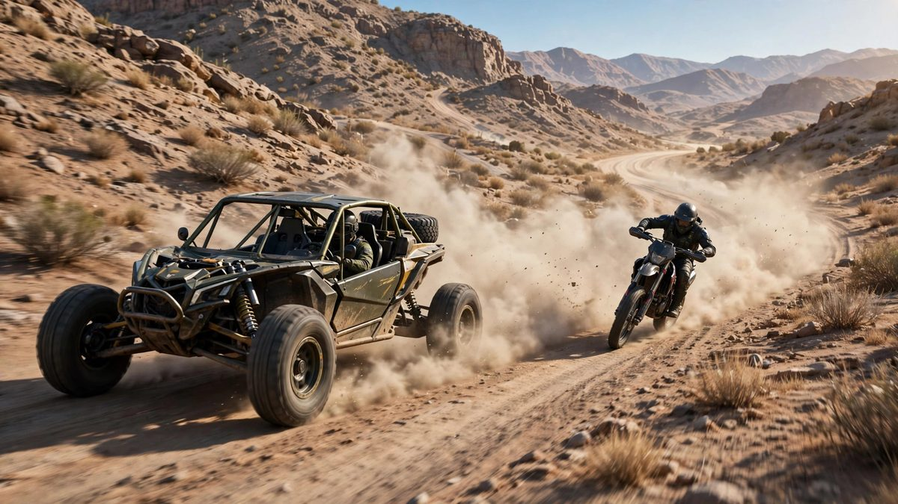

Vehicle Guide: Driving, Rotations and Escapes

Vehicles are the fastest way to cross a PUBG map, and also the loudest. A UAZ roaring across an open field can be heard from hundreds of metres away, and a car full of players is a tempting target for anyone with a sniper rifle. Yet skipping vehicles is not an option: on large maps like Erangel and Miramar, the zone can land kilometres away, and running that distance means arriving late, low on health and out of position. The skill is knowing when a vehicle helps you, which one to take, and how to drive it safely.
Choosing the Right Vehicle
Every vehicle in PUBG trades speed, protection and noise against each other. The UAZ is the toughest common vehicle, with a closed body that shields passengers from most angles, but it is slow and loud. The Dacia is fast on roads and handles well, but its open windows and thin body leave passengers exposed. The buggy is quick and nimble off-road, making it a favourite on Miramar, yet it offers almost no protection. Motorcycles are the fastest way to travel and the hardest to hit, but one crash or a single well-placed shot can end your run.
As a rule, take the toughest vehicle available when you expect a fight on arrival, and the fastest one when you simply need to outrun the zone. In squads, a four-seater like the UAZ or Dacia keeps the team together, which matters more than top speed. In solo, a motorcycle or buggy is often better because you are a smaller, faster target. Always check a vehicle's health before you get in: a car at 20 percent health will explode after a few hits and take you with it.
Rotations: When and How to Drive
The best rotation is the one nobody sees. Rotate early, before the zone starts shrinking, when other players are still looting and the roads are quiet. Use the terrain to hide your approach: drive through valleys, behind ridges and along tree lines instead of straight across open fields. On Erangel, the river and the hills around it offer natural cover; on Miramar, the canyons and ridges hide you from long sightlines. Avoid driving directly through the centre of a town, since an enemy in a window can spray your car as you pass.
Planning your route
- Open the map before you move and pick a destination with cover, not just a spot inside the circle.
- Take the route with the most terrain cover, even if it is slightly longer.
- Stop 100 to 200 metres short of your destination and approach the last stretch on foot.
- Never drive into a compound you have not checked; park outside and clear it carefully.
Driving Under Fire
Getting shot at while driving is one of the tensest moments in PUBG, and panic is what gets people killed. The first rule is to keep driving. Stopping in the open to return fire almost never works, because the enemy is stationary and aimed while you are exposed in a car seat. Instead, change direction unpredictably: weave left and right, use the handbrake to slide around corners, and head for the nearest ridge, smoke or building that breaks line of sight.
If your vehicle starts smoking, it is about to explode. Get out immediately and move away, because an exploding vehicle deals heavy damage to everyone nearby. In squads, the driver should call out the escape direction so passengers exit on the safe side. Passengers can also shoot from the vehicle to suppress an enemy while the driver escapes.
Vehicles as Cover and Weapons
A parked vehicle is one of the best pieces of cover in the game. In the final circles, where there may be no rocks or trees, a UAZ or Dacia gives you a solid wall to fight behind. Just remember that cars have a health bar: sustained fire will destroy them, and a destroyed car explodes, so do not treat a burning vehicle as permanent cover. Move to new cover as soon as the car starts smoking.
Vehicle tips by map
| Map | Best Vehicle | Why |
|---|---|---|
| Erangel | UAZ / Dacia | Long roads, big distances, mixed terrain |
| Miramar | Buggy / Pickup | Off-road desert, steep hills, long sightlines |
| Sanhok | Motorcycle / Tukshai | Small map, short rotations, dense jungle |
| Vikendi | UAZ / Snowmobile | Snow terrain, long distances, open fields |
Frequently Asked Questions
Which vehicle is the safest in PUBG?
The UAZ is generally the safest thanks to its enclosed body and high health, which protects passengers from most angles. The armoured UAZ found in some matches is even tougher. That said, no vehicle is safe against sustained fire or a well-placed grenade, so cover and positioning matter more than the car you choose.
Should I use a vehicle in the final circle?
Usually not for driving. Park it early and use it as cover, or abandon it entirely if it gives away your position. A running engine in the final circle tells every remaining player exactly where you are, and the small zone leaves no room to escape if your car gets focused.
How do I avoid crashing on Miramar?
Slow down before hills and ridges, and avoid jumping off cliffs at full speed, as landing damage can flip or destroy your vehicle. The buggy handles Miramar's rough terrain best, while the Dacia struggles off-road. Learn the main roads and use them when you need to cover distance quickly.
Download PUBG: Battlegrounds
Play free on PC or mobile — download the official game from the links below.